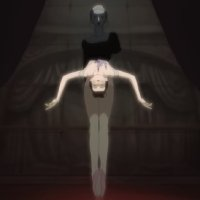
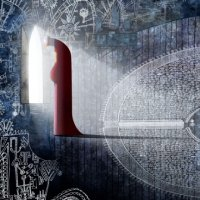
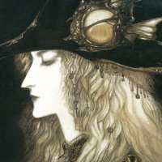
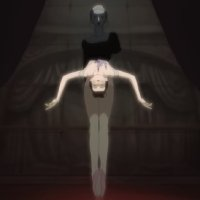
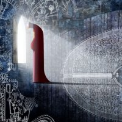
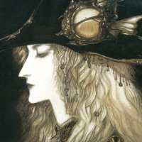

Art is something that comes easy to almost everyone, whether they pursue it or not. It is innate in human nature to create, whether it is through pencil and paper or other means. I have pursued the arts since I was a young child, and have taken pride in my progression. I have spanned from traditonal art to minor graphic design, currently finding interest in storytelling and animation. I draw inspiration from many sources, and try to create art that is unique to me and not heavily influenced (storywise) by any outside sources. As a child, movies like The Secret of Kells and FFVII: Advent Children heavily influenced my understanding of the arts, perspective, motion, and what creates an intriguing, beautiful environment and overall scene.
Currently, I've been focusing on story development and short animation 15s-2min following a story of my own creation, called Bruxist. This story evolved from my love of the unconventional, as many of my other stories have. Displayed by a dark cyber-coloured artstyle, it follows a young Pinoy man and his cohort of silly men around a degrading, disaster-ridden city. Since these characters are pre-existing, they are also the current subject of my English creative writing project. My art style mostly consists of cell shading, because I'm honestly too lazy for proper rendering due to the fact that I prefer to get everything I can done in one sitting. Oftentimes I put down flats, shading, highlights, and slap two to three colour dodge layers over it and call it good. My art style has improved with time, though. I've been understanding colour theory better, and being able to create better, more interesting contrast within my art pieces. I also do art and character studies to help improve my understanding of posing, emotion, and scene colouring.
As long as I can remember, I have been writing stories and creating art. This has now amalgamated into my current magnum opus: Bruxist. Originating from the term "bruxism", a condition where a person grinds and clenches their teeth, I truly aim to make a story with a plot and characters that leave you tense at every step. Including my knowledge of human psychology because of my other interests, I've delved deep into drawing together the perfect kind of people to leave the viewer of my creation feeling as if they witnessed something they never had before. While still a work in progress, I've made sure to allow myself to bend and twist every element of the story from what it originally was into the best thing it possibly could become.
My mother has always been a very artistic person. Some of my earliest memories are of her tending to a gouache painting on our beige carpet floor. As I grew, I found myself always studying the linework of cartoons and anime I watched. In my elementary years, I learnt heavily through tracing. It didn't help that much, but it did give me better motor skills, and helped me learn to build what was in front of me. This skill is detrimental to me now. I have gotten to a point where I recognise my own style and capabilities, and with that I can create animations in my head. Following my mind's eye, I can reproduce exactly what I imagine on screen. The photo-to-paper copies I did as a child were definitely not a quick way to earn skills, but one that has proved endlessly useful nonetheless.
As I continued through middle school, I eventually branched away from the confines of copying art pieces or character profiles from my favourite media. My drawings were bad, cliche, and badly shaded, but they were drawings nonetheless. Sometime in 8th or 9th grade, I began to pursue digital art using aggie.io. Despite there being many other art platforms, I hated how they navigated and kept with that website. I learnt how to brute force my way into making a decent art piece. I dealt with putting it through at least three low-quality exports to get it over to instagram. It was hell, but it was art. To my luck, last year I managed to get Procreate. It's all been over since then. Highest quality art you can imagine.
To save you any more pain of me rambling about how I got into art or Bruxist (which I could make an entire webpage on)(I actually currently have a really badly formatted carrd on it which I definitely could make pretty because I know how to use carrd but I'm just too lazy) I'll put some photos of my favourite art pieces/scenes from my inspirations. if u even care.
![A drawn image of circus performers sitting, putting their makeup on. On the far left, a person wearing white's shoulder is in frame. Behind them, a man with brunette hair and star glasses is leaning back in his seat to observe the person in white. On his left, towards the back, is a blonde teenager who appears very nervous. To the brunette man's right, closer to the foreground, is a brunette woman with short hair who is leaning forward and uninterested. She is applying her makeup. Sourced from GOBELINS Animation Studio, SUNDOWN.](Images/gobelins-Cropped.jpg) 




